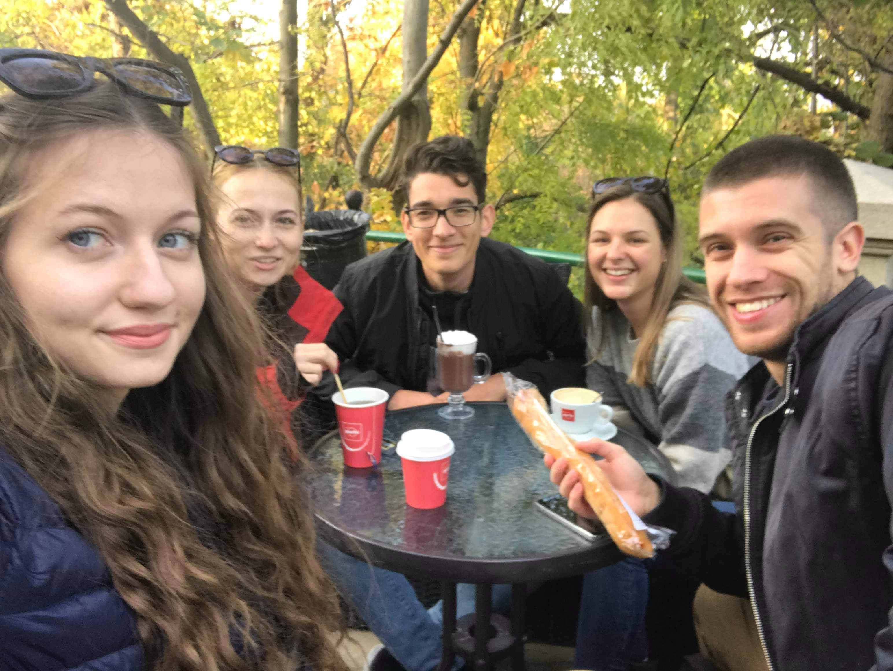
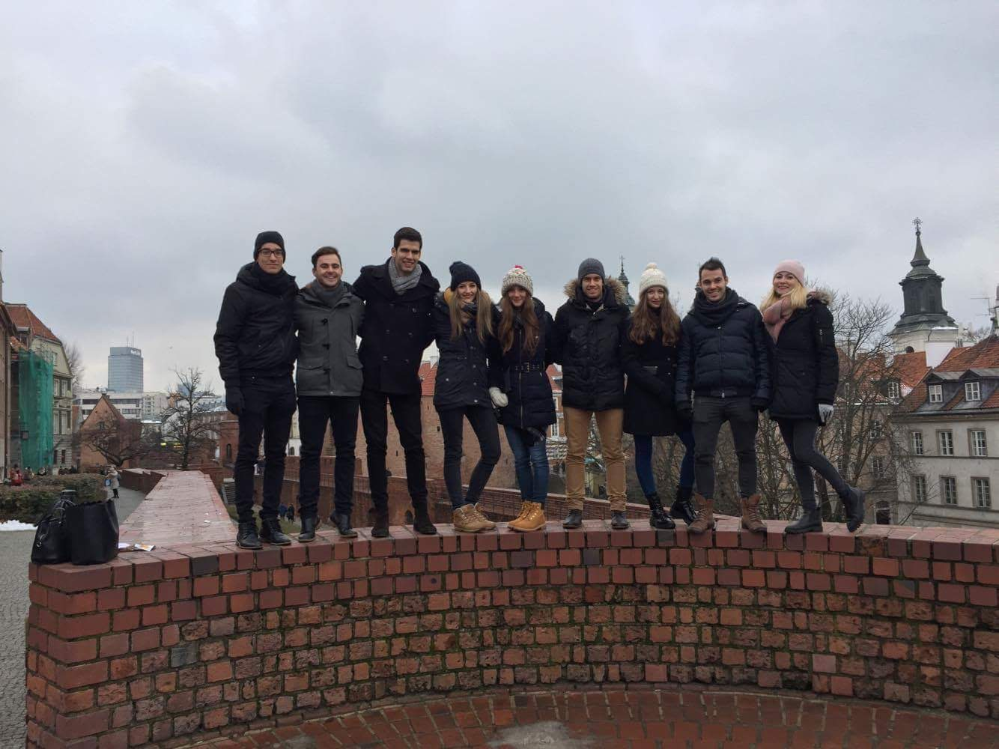
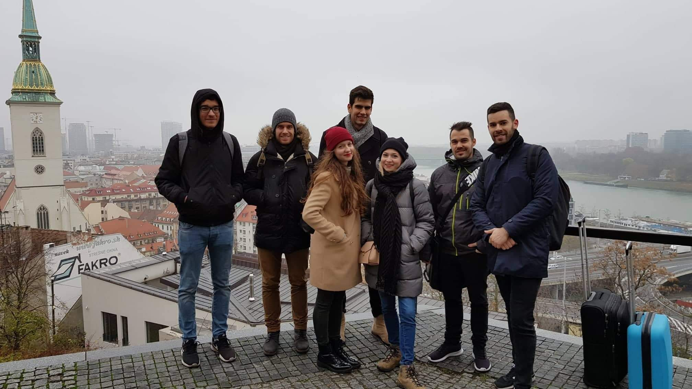

Sziasztok!
Többeteknek már megemlítettem, hogy elkezdtem webfejlesztést tanulni. Ennek keretében mindenképpen szerettem volna kipróbálni a tanultakat egy saját projekten. Úgy gondoltam, hogy a mostani kijárási korlátozás alatt jól esne mindenkinek a remény, hogy még utazhatunk idén valamerre. Így kevertem a kellemest a hasznossal, s létrehoztam ezt a "weboldalt".
Nézzétek végig az összes lapot tüzetesen! Mindegyik túra egy szombati napon kezdődik, s a következő vasárnapig tart (9 nap). Minden fül alján van egy kis gombocska, ahol tudtok jelentkezni. Igazából mindegy, melyikre nyomtok :)


